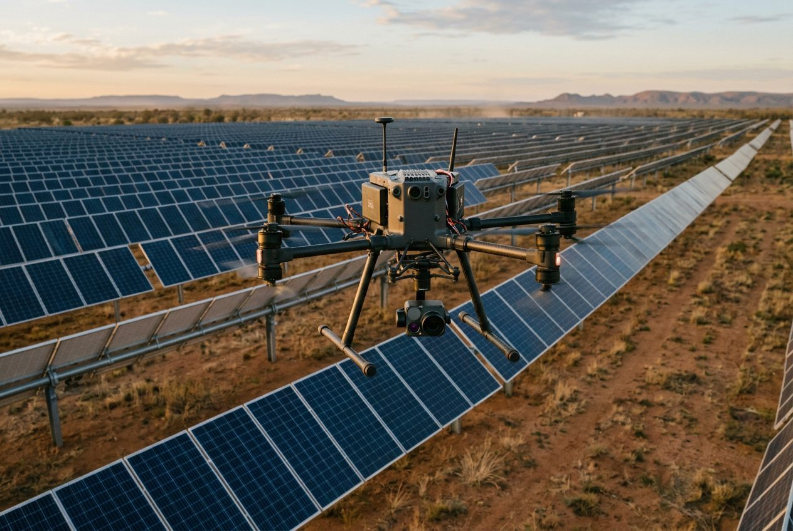
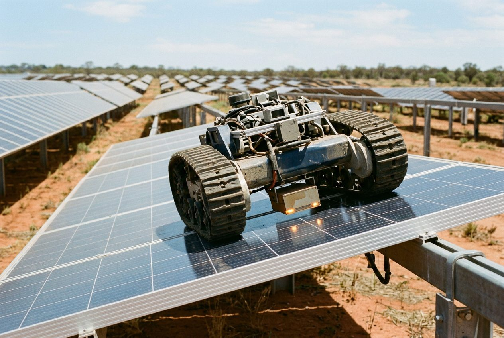
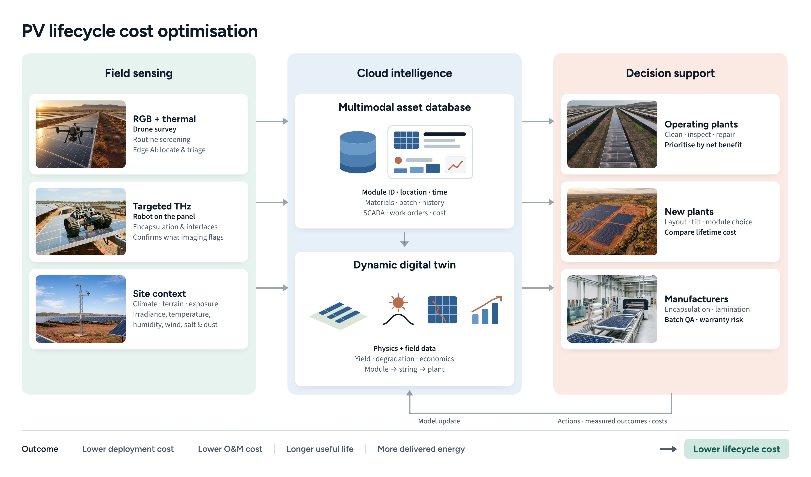
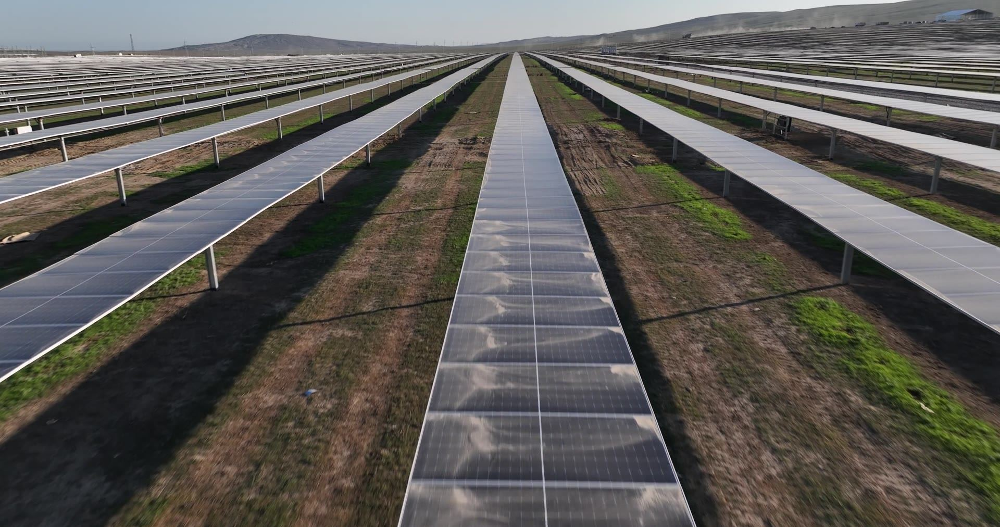

Services
Field data you can act on.
Everything we build runs on evidence collected in the field. These are the services we deliver directly: surveys, subsurface diagnostics, custom edge AI and the lifecycle twin that ties them together.
01
Drone surveys
RGB and thermal imaging with on-board defect detection, orthomosaics and 3D site twins.
Details02
Subsurface diagnostics
Robotic terahertz measurements on selected modules to see what cameras cannot.
Details03
Custom edge AI
Computer-vision models trained on your data and deployed on drones, robots and fixed cameras.
Details04
Lifecycle digital twin
Regular automated surveys feeding a spatiotemporal twin and decision dashboard.
Details01 / Drone surveys
Whole-array screening in a single flight.
Drone-mounted RGB and thermal cameras capture every module. An on-board edge inference unit detects and ranks anomalies in flight — hotspots, cracked glass, soiling, vegetation, string outages — so you receive a prioritised inspection plan rather than terabytes of raw imagery. Each survey also produces a georeferenced orthomosaic and a 3D model of the site.
- RGB + thermal capture with module-level localisation.
- Edge AI anomaly detection and ranking during the flight.
- Orthomosaic, 3D terrain and site digital twin as deliverables.
- Operations by CASA-credentialed remote pilots under a certified operator.
Typical useCommissioning inspection · Annual condition survey · Post-event damage mapping · Warranty evidence

02 / Subsurface diagnostics
See inside the module.
Where screening flags a module worth a closer look, a panel-crawling robot carries a terahertz sensor across its surface. THz penetrates glass and encapsulant and returns material-state evidence — delamination, moisture ingress, interface and encapsulant degradation — that RGB and thermal imaging can only infer. Repeat scans quantify change between visits.
- Targeted measurements on modules selected by the screening pass.
- Material-state evidence for root-cause assessment.
- Repair verification and repeat-scan comparison.
Typical useRoot cause of underperforming strings · Warranty claims · Pre-purchase due diligence

03 / Custom edge AI
Your detection problem, running on your hardware.
The same pipeline that powers our surveys is available for your own use cases. We collect and label data, train computer-vision models, quantise them for edge hardware and deploy them on drones, ground robots or fixed cameras — with on-device inference and store-and-forward of only the events that matter.
- Dataset design, labelling and model training.
- Deployment on NVIDIA Jetson, Hailo and comparable edge accelerators.
- Camera integration, on-device inference and cloud hand-off.
Typical useVegetation encroachment · Security and intrusion · Fire and smoke · Construction progress · Wildlife

04 / Lifecycle digital twin
From one-off survey to ongoing service.
Automated, remotely operated surveys on a regular cadence keep the twin current. Each module's materials, exposure history, inspection evidence and energy performance are linked in one record, and the twin predicts the most economical action — clean, reinspect, repair, replace or defer — with the cost comparison made explicit. The dashboard is yours; the data stays attributable to your plant.
- Scheduled and event-triggered surveys.
- Hybrid physics-and-data model refined by measured outcomes.
- Decision dashboard with recoverable-energy and cost estimates.
Typical usePortfolio O&M prioritisation · Degradation tracking · Design feedback for the next plant

How an engagement runs
Start small. Measure. Then scale.
1. Focused pilot
One site, defined scope, measured baseline. Usually a survey plus targeted diagnostics on flagged modules.
2. Validated value
Recommended actions are carried out and the recovery is measured against the baseline.
3. Fleet rollout
Regular automated surveys across the portfolio, feeding the twin and your O&M planning.
Tell us about your site.
Pilot sites, data partnerships and custom edge AI work all start with a conversation.